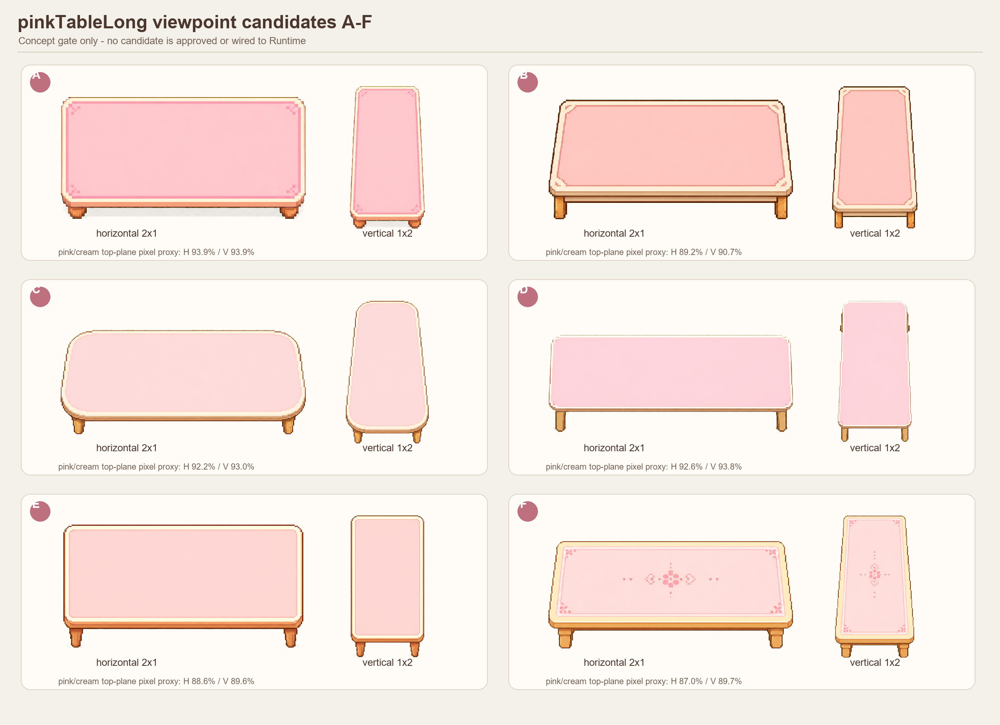
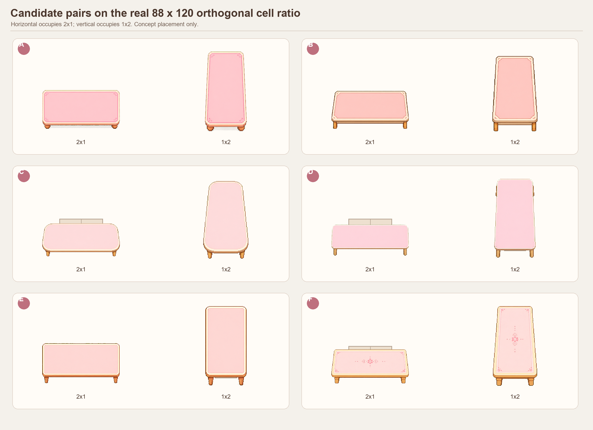
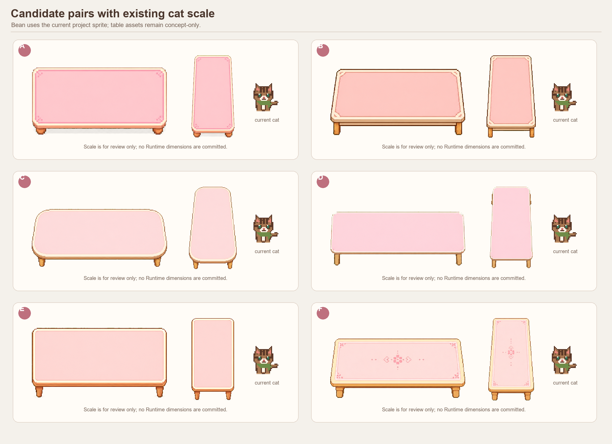
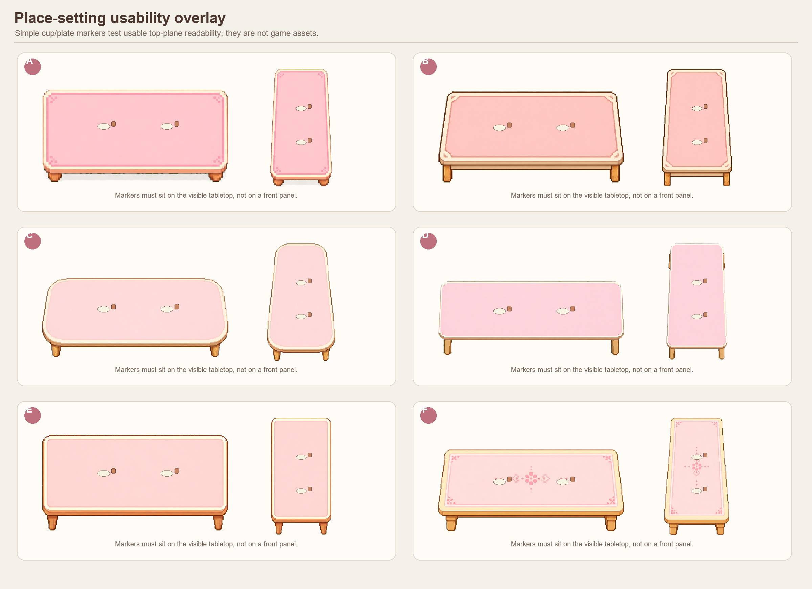
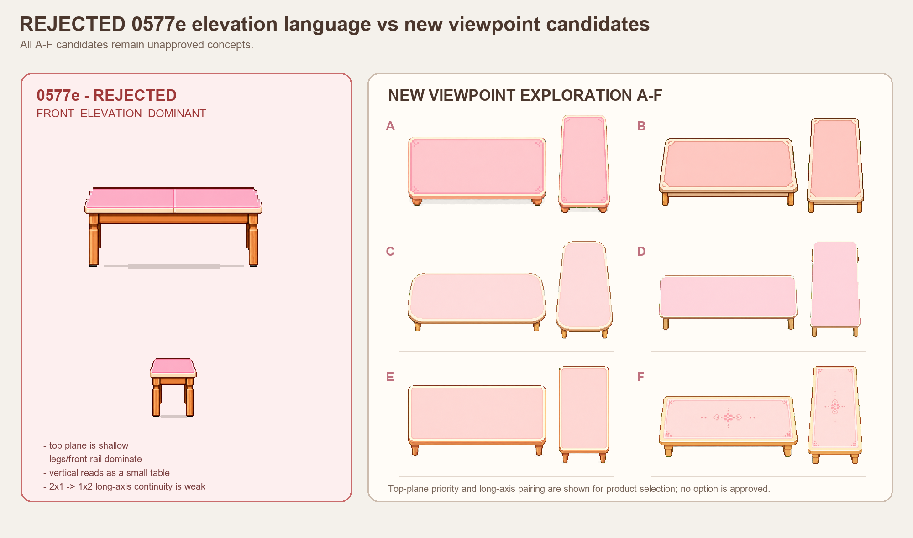
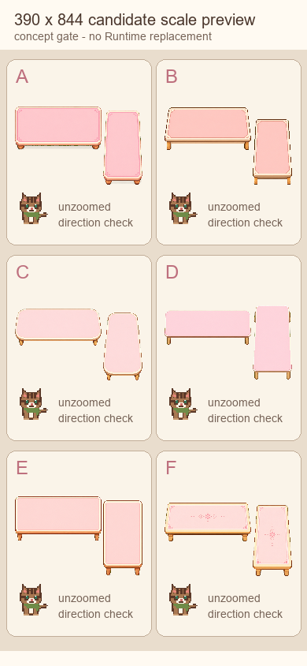

ART-0577F pinkTableLong 視角 Gate
產品 Gate 待核准：A–F 全部是概念候選，未接入 Runtime、未取代正式家具素材、未升 Build。






產品決策
- 候選 A／B／C／D／E／F
- 全部退回重做
- 核准其中一組進入正式素材製作
若核准，請明確回覆：「核准候選 X，可以進入正式素材整合」。
產品 Gate 待核准：A–F 全部是概念候選，未接入 Runtime、未取代正式家具素材、未升 Build。






若核准，請明確回覆：「核准候選 X，可以進入正式素材整合」。